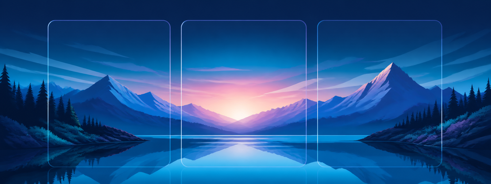
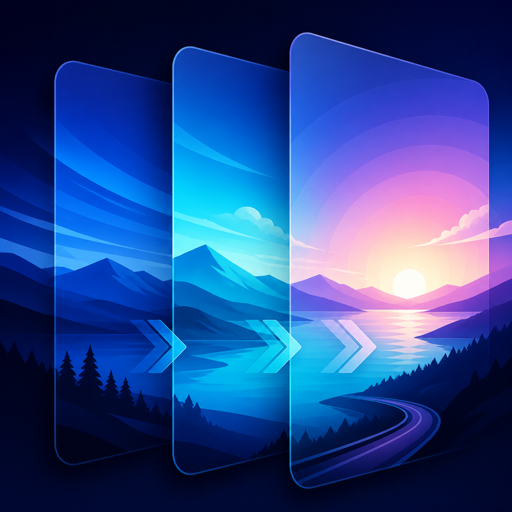

PanoramaPages
One panorama. Every Home Screen page.
Choose a wide photo in Settings and PanoramaPages moves it smoothly as you swipe between Home Screen pages.
Highlights
- Select, replace, or remove a dedicated panorama.
- Tune image span and direction without a respring.
- Optional LiquidAss Snapshot compatibility on validated systems.
- Rootful, rootless, and RootHide packages with arm64 and arm64e slices.
Compatibility
Tested on iOS 14–18. The rootless package is installable through iOS 26, which remains untested.